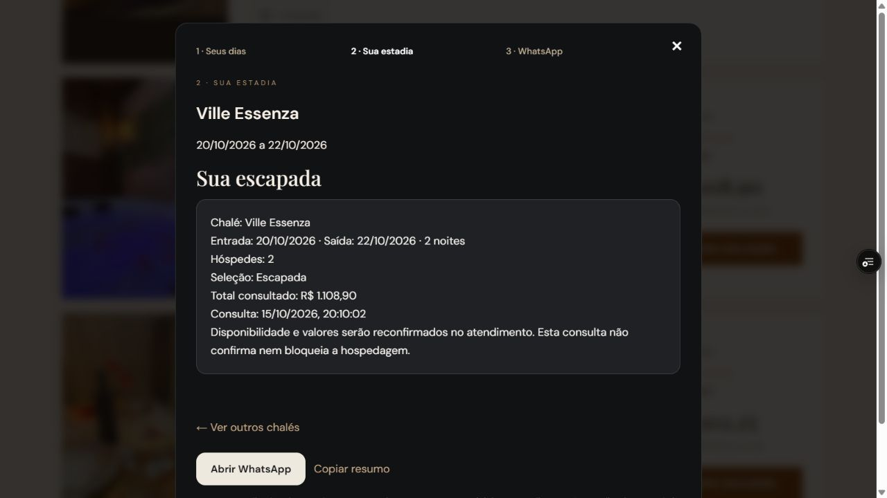
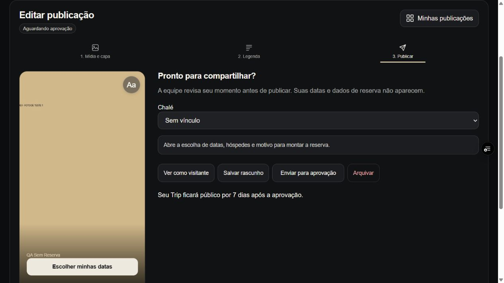
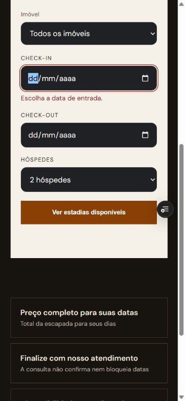

15/10/2026. Correções publicadas somente em prévia DEV. Produção não foi alterada.
Prévia final · branch qa/new-user-journeys-20261015 · código 185295a1.
| Cenário | Evidência / resultado |
|---|---|
| Cadastro de duas pessoas novas | Formulário real preenchido com dados fictícios. Contas A e B criadas; login errado dá “E-mail ou senha incorretos”; login correto funciona. Confirmação de e-mail foi preparada diretamente no banco DEV para permitir continuidade. Entrega real do e-mail não homologada. |
| Perfil privado e público | Salvos pela interface. Privado informa necessidade de perfil público; consentimento público permite editor. API confirmou 404 para visitante em perfil privado e 403 para editor privado. Perfil de teste restaurado ao estado público. |
| Publicação sem reserva | Duas fotos realmente enviadas, texto sobre a segunda foto persistido. Marcação inexistente impediu envio sem perder composição. Após remover marcação, publicação foi enviada, aprovada pelo administrador e confirmada como pública; expiração sete dias depois. |
| Publicação com reserva | Conta B reconheceu reserva DEV de 09–11/03/2027 e sugeriu Essenza. Upload inválido recuperado com JPG. Envio, devolução com motivo e reenvio funcionaram. Ficou aguardando aprovação para revisão posterior. |
| Autorização no servidor | Visitante não abre editor (401); hóspede não modera (403) nem edita publicação alheia (404). Publicação aprovada aparece na consulta pública; perfil privado fica oculto. |
| Reserva / consulta | Datas vazias, invertidas e passadas testadas. Correção mantém dados e permite continuar. Consulta Essenza 20–22/10/2026, duas pessoas e duas noites: R$ 1.108,90, igual no resultado e resumo WhatsApp. Nenhuma mensagem enviada. |
| PMS com fotos | Criada tarefa sintética em imóvel QA. Não avançou sem foto. Cinco itens percorridos, cinco fotos enviadas, revisão mostrou todas, envio único para aprovação e aprovação confirmada no banco. |
| Layout móvel | Viewport 390×844; campos de datas com 287 px, empilhados e dentro do formulário. Este teste não substitui Safari/iPhone físico nem câmera real. |
798 testes automatizados passaram no código cc22c666; a alteração final que remove mensagem duplicada passou no teste específico de datas. Dez cenários de API real passaram (resultados). Logs: suíte completa.
Base de produção e prévia atual era 6f37f982. Correções foram feitas a partir dessa versão, preservando evolução de Moments/PMS. Checkout e pagamentos não foram removidos; continuam no perfil checkout-development. O fluxo público homologado nesta rodada é consulta/WhatsApp: não confirma uma reserva nem cobra pagamento.
Comparação do bundle remoto villegram-content: seis arquivos iguais entre DEV e PROD; release-policy difere porque produção libera operações adicionais específicas. Essa diferença não foi sobrescrita. Não houve migração nem deploy de funções nesta rodada.
Banco DEV pxfqmnhqodqyaaqeyjgr. Nenhuma exclusão de hóspedes ou reservas reais.
d21af4c6-b86b-4b0c-95d3-28cba3d5b53b; publicação 446a734e-73d1-4fc2-a05b-382ea302bcc5.3f5ac111-baac-424a-a988-fc536726f10e; publicação 629ec0f4-2573-4de7-ad2a-723c21d013cc; reserva 808d5ba9-bc3a-4e2a-8910-c392d60efdcb.7d2aa9f8-2f52-4301-ad0d-c89192b6438e, “QA 1510 — teste guiado com fotos”.Mensagens identificam o problema e a correção, próximas ao campo, preservando a entrada: GOV.UK — Error message e W3C WAI — User notifications.
Consulta válida:

Publicação sem reserva enviada à moderação:

Validação móvel final:
